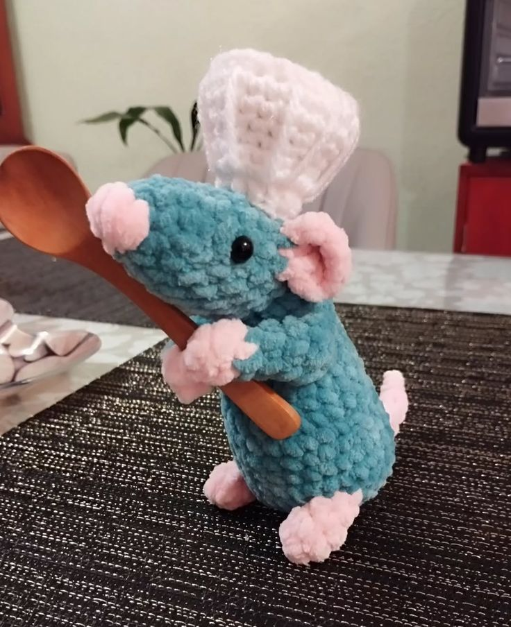
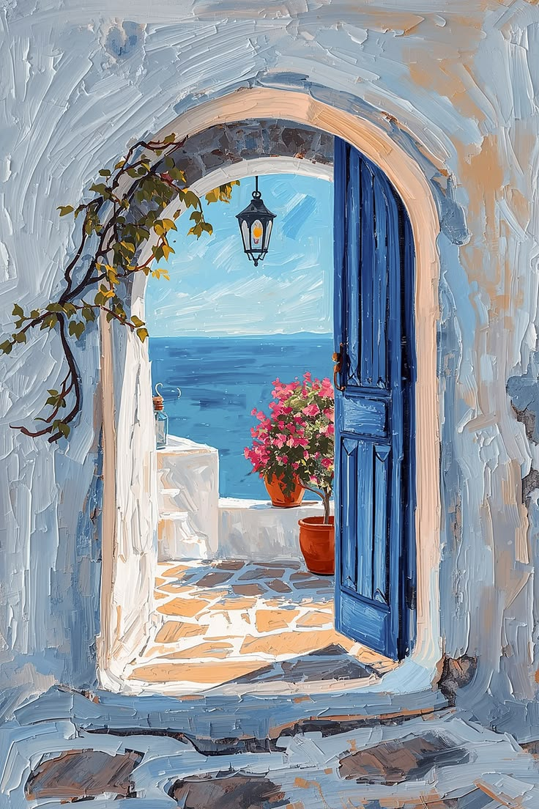
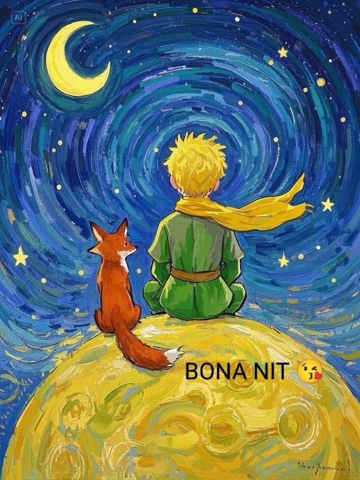

Dos patitos
Tejidos
Tejido a mano en lana de dos patitos.
+ Info sobre el tejido de dos patitos (PDF)🎨 Artesanías & Arte
Tejidos, cerámicas y pinturas hechas a mano con dedicación y materiales nobles. Cada pieza es única y cuenta una historia hecha por artesanos de la región. Explorá nuestro catálogo y descubrí el detalle que hace especial a cada artículo.
Elegí una categoría en la lista desplegable para filtrar el catálogo. Presioná el botón + Info de cada artículo para abrir su ficha con la información adicional en formato PDF.
Categorías de artículos disponibles
Mostrando todos los artículos.
Tejidos
Tejido a mano en lana de dos patitos.
+ Info sobre el tejido de dos patitos (PDF)
Tejidos
Tejido a mano en lana de tom lagartija de Hoppers.
+ Info sobre el Tejido de Tom Lagartija (PDF)
Tejidos
Tejido a mano en lana de ratatouille.
+ Info sobre el tejido de ratatouille (PDF)
Cerámicas
Taza de cerámica de paisaje en las montañas.
+ Info sobre la Taza de paisaje (PDF)
Cerámicas
Taza de cerámica de paisaje con ovejas.
+ Info sobre la taza de ceramica (PDF)
Cerámicas
Plato decorativo de cerámica de dos patos.
+ Info Plato de cerámica de dos patos (PDF)
Pinturas
Paisaje original al óleo con pastas que capturan la luz.
+ Info sobre el cuadro al oleo (PDF)
Pinturas
Cuadro de la noche estrellada de Van Gogh.
+ Info sobre La noche estrellada (PDF)